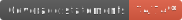
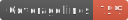

@designliquido/delegua
Linguagem Delégua
Linguagem de programação 100% em português com suporte a múltiplos dialetos, como Portugol VisuAlg, Portugol Studio, Mapler e BIRL.
Página Web com Interpretador Delégua para demonstrações




Acompanhe a Design Líquido nas redes sociais:


Introdução
Delégua é uma linguagem de programação baseada na língua portuguesa, cujo código começou como uma variação (fork) da linguagem Égua, usada para fins educacionais e comerciais pela Design Líquido. A variação começou na versão 1.2.0 de Égua.
Delégua tem retrocompatibilidade com a linguagem Égua e compreende sua extensão de arquivo (.egua). Em outras palavras, todo programa escrito em Égua funciona em Delégua, mas Delégua tem capacidades a mais, conforme mencionado em documentação.
Vantagens de programar em português
Acessibilidade e Compreensão: Programar em sua língua materna, como o português, pode tornar os conceitos de programação mais acessíveis e fáceis de entender, especialmente para iniciantes. Isso reduz a barreira de entrada para novos programadores.
Facilita o Aprendizado: A programação em português permite que os aprendizes concentrem-se nos conceitos de programação em vez de lidar com a barreira do idioma. Isso pode acelerar o processo de aprendizado, especialmente para pessoas que não têm fluência em inglês.
Melhor Comunicação e Documentação: Programar em seu idioma nativo pode levar a uma comunicação mais clara e eficaz com colegas e clientes locais. Além disso, a documentação em português pode ser mais fácil de compreender e seguir.
Contribuição para a Identidade Cultural: Linguagens de programação em português contribuem para a preservação da identidade cultural e linguística, promovendo o uso e a adoção do idioma em contextos tecnológicos.
Facilita a Localização de Erros: Programar em português pode tornar mais fácil a localização e correção de erros de código, uma vez que os desenvolvedores podem compreender rapidamente o contexto dos problemas.
Características
Delégua, a linguagem de programação totalmente em português, possui uma série de características que a tornam única e atraente:
Acessibilidade
Simples e Completa: Delégua é projetada para ser acessível a programadores de todos os níveis, desde iniciantes até experientes. Sua simplicidade e completude facilitam a aprendizagem.
Totalmente em Português: Uma característica distintiva é que Delégua é desenvolvida inteiramente em português(mesmo), tornando-a acessível e amigável para aqueles que preferem programar em seu idioma nativo.
Tecnologia Moderna
Código aberto (open source): Delégua é uma linguagem de código aberto e gratuita, licenciada sob a MIT License, permitindo o uso sem restrições.
Modularidade: A linguagem suporta a criação de módulos reutilizáveis, promovendo a organização e a manutenção do código.
Orientada a Objetos: Delégua oferece recursos completos de programação orientada a objetos, incluindo classes, objetos e herança.
Multidialetos. Execute algoritmos em Portugol VisuAlg, Portugol Studio, Portugol Mapler e Portugol IPT.
Flexibilidade e Potencial
Depurável. Usando um editor com suporte à depuração como o Visual Studio Code, você pode inspecionar o seu programa, suas variáveis e executar linha por linha.
Portabilidade: Delégua é executável em qualquer dispositivo que interprete JavaScript, tornando-a versátil e compatível com diversos sistemas operacionais e qualquer navegador de internet.
Traduzibilidade: A capacidade de traduzir programas entre Delégua, Python e JavaScript aumenta a flexibilidade e as opções de desenvolvimento.
Aplicações
- Escrita de aplicações para Internet, usando o ferramentário (framework) liquido;
- Aplicações em React Native.
Instalação
Delégua executa em qualquer dispositivo que interprete JavaScript, ou seja, computadores, celulares e tablets. Você não precisa instalar nada se não quiser. Utilize uma das seguintes opções:
- Dentro do Visual Studio Code, instale a extensão da Design Líquido. Aprenda como executar e depurar seu programa aqui;
- Utilize nosso editor online.
Para instalar no seu computador, veja o projeto @designliquido/delegua-node.
Documentação
- Delégua é documentada na Wiki deste GitHub.
- A documentação técnica (gerada por TypeDoc) pode ser encontrada aqui.
Contribuições e Comunidade
- Para contribuições, por favor, leia o nosso Guia de Contribuição antes de submeter uma Pull Request.
- Veja nossas discussões atuais.
- Temos um grupo no Discord.